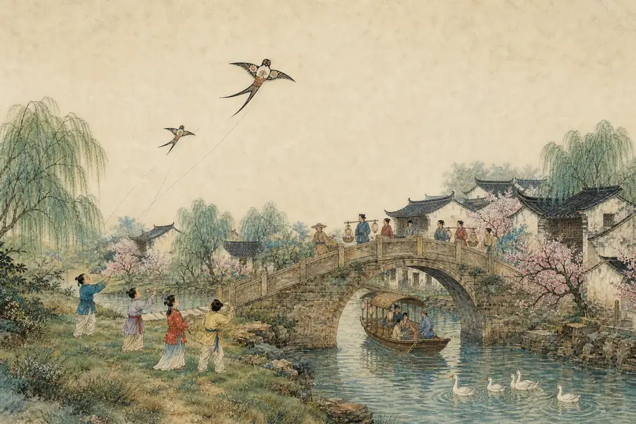

AIDUCATION · AI 教育科技
用 AI，讓經典再次發光。
Classics, relit by AI.
AIDUCATION 以人工智能重新設計中文與經典學習：從開口讀好一首古詩，到走進一座可以漫步的文化村。
01 / 04shī · Poetry讀懂一首詩
香港科技園 EASE Fund
向下探索
關於我們 · About
關於 AIDUCATION
我們是一支由教育學者與工程師組成的團隊。我們相信，AI 不只是批改作業的工具——它能讓孩子開口讀詩、走進詩裡，愛上自己的語言與文化。
We are educators and engineers building AI that helps children read classical poems aloud, step inside them, and fall in love with their own language and culture.
融合 AR、數字人、大語言模型與具身智能，打造下一代沉浸式中文教育。
01
AR × 3D 沉浸詩境Immersive AR & 3D
AR 古詩教具與 100+ 個可旋轉的 3D 詩境，把詩中山水搬到孩子眼前——讀詩，就是走進詩裡。
02
AI 數字人 × 大語言模型Digital humans × LLMs
自研 AI Agent 驅動學習向導詩詩與 500+ 位 AI 詩人：聽得懂、答得出、會追問，一對一陪每個孩子學。
03
具身智能Embodied intelligence
聽、說、寫、動，多模態感知孩子的每一次開口、每一筆書寫、每一個動作——AI 走出螢幕，走進課室。
源自 AR 多語古詩教具研究，支援普通話、粵語、葡語及英語。
團隊 · Team
教育學者 × 工程師
Educators and engineers, side by side.

范釔君
AIDUCATION CFO
- 聖若瑟大學教育學院高級講師
- 香港教育大學教育學博士
- 榮獲多個國際賽事獎項，致力於 AI 教育的創新研究

金夢瑤
香港教育大學國學中心聯席總監
- 香港考試及評核局科目委員會委員
- 中文電子化教學專家
- 深耕中文電子化課程改革和評估研究

曾綽琳
香港寶覺中學老師
- 香港教育大學學士，香港大學在讀碩士
- 香港準教師協會副主席
- 香港兒童文藝協會會員

寧楊添
AIDUCATION 技術總監
- 擁有電機工程專業背景的軟硬件全棧工程師
- 主導研發 AI 驅動多語言古詩互動教學系統
- 具備從底層硬件到 AI 應用的全鏈路開發能力
01產品 · Product
AI 普通話
學習平台
AI Putonghua Learning Platform
一首古詩，一次開口，
就是一堂好玩的普通話課。
為香港中小學打造。聽、讀、寫、玩、聊，五種方式把 300+ 首古詩變成孩子願意開口的普通話課。網頁即用，iPad 優先，免安裝。
我是詩詩，陪你讀古詩！

宣傳片 · AI 普通話學習平台片中教師後台與報告均為模擬數據
- 300+首古詩
小學至高中全覆蓋 - 100+部原創
古詩動畫 - 200+款古詩
小遊戲 - 1萬+段標準
普通話音頻 - 500+位可對話的
AI 詩人 - 100+個可旋轉的
3D 詩境
-
選一首古詩，開始學
One poem, one learning path
300+ 首古詩，小學至高中全覆蓋。一首詩串起朗讀、動畫、遊戲與 3D 詩境，孩子跟着詩詩一步步學。

-
AI 朗讀評測
AI read-aloud assessment
逐字診斷聲母、韻母、聲調，即時評分，還會告訴孩子這個字「聽起來像」哪個音。

-
字音小練習
Targeted sound drills
自動挑出低於 80 分的字：聽示範、比相似音、再跟讀，每次只專注一個小目標。

-
3D 詩境
3D poem worlds
把詩中的風景變成可旋轉、縮放的 3D 場景。打開杜甫《客至》，茅屋、蓬門、花徑與「舍南舍北皆春水」就在指尖轉動，一看就懂。

-
古詩小遊戲
Hands-on poem games
讀《詠雪》，就在漫天飛雪裡數雪花：點一片，數一片，「一片兩片三四片」跟着亮起來。200+ 款動手小遊戲，邊玩邊記，不靠死背。

-
筆順・描紅・聽寫
Stroke, trace, dictate
先看筆順示範，再跟着淡紅色描紅，最後獨立聽寫。AI 手寫辨認逐筆判斷，寫對一筆就有回饋。

-
教師後台與 AI 教研報告
Teacher dashboard and AI reports
全班朗讀分布與逐字熱圖，低於 80 分自動標紅；一鍵匯出 Excel，以及由 AIDUCATION 自研 AI Agent 撰寫的教研報告。
示範畫面使用模擬數據

AI 詩人 · AI Poets
與詩人對話
Talk with the poets有無數位 AI 詩人陪孩子聊詩、解惑；
回答會朗讀出來，還能一起創作一首新詩。
可以對話的 AI 詩人包括李白、杜甫、王維、白居易、李商隱、蘇軾、李清照、陸游、陶淵明、孟浩然、杜牧、王昌齡、屈原、曹植、王之渙、賀知章、辛棄疾、柳宗元、劉禹錫、王安石、楊萬里、范仲淹、歐陽修、岑參、駱賓王、韓愈、鄭板橋、納蘭性德……數之不盡。
動畫看古詩Poem animations
100+ 部原創古詩動畫，跟着詩人走進故事，再回到詩句。
一鍵資源包One-tap offline pack
按年級一鍵下載圖片、錄音、動畫與模型；舊款 iPad 自動換上輕量版本。
重視私隱Privacy by design
學習紀錄結構化、去識別化；不保存原始筆跡與聊天全文。
技術棧 · Technology
頂尖 AI 技術，
驅動每一次開口。
Self-developed AI agents, industry-grade speech assessment and state-of-the-art voice, handwriting and 3D engines.
- AGENT自研 AI Agent
自主規劃、調用工具、分析全班數據，一鍵生成教研報告——會思考的 AI 助教。
- SPEECH業界級語音評測引擎
逐字、逐音素診斷聲母、韻母、聲調，精準指出每一個讀錯的音。
- VISIONAI 像素級手寫辨認
逐筆追蹤筆順與筆畫軌跡，像素級比對，寫錯一筆，即時提示。
- VOICE最先進的 TTS 語音模型
1萬+ 段標準普通話朗讀，字正腔圓、抑揚有致，媲美專業播音。
- LLM大語言模型
驅動 500+ 位 AI 詩人，各有性格、詩風與時代，有問必答，出口成詩。
- REAL-TIME 3D實時 3D 渲染
100+ 個 3D 詩境在瀏覽器即開即轉，iPad 上同樣流暢。
02產品 · Product
中華經典文化村
Chinese Classics Culture Village
讓孩子走進古詩裡，生活一次。
一座可以在瀏覽器裡漫步的國風數碼村落。孩子先看見、再動手、再理解：在村口賞春，在茶寮聽雨，在燈夜放燈，詩句就藏在日常的煙火之中。

圖為概念設計，非遊戲實機畫面。
- 走進詩畫詩句化作可以走進去的場景，孩子在畫中漫步。
- 煙火日常泡茶、種菜、製燈，在動手中體會詩意。
- 器物細看3D 古器物可旋轉、可放大，看清每一處細節。
- 村中尋趣跟着線索尋找詩句，親手拓印帶回家。
- 成長印記收集印記與明信片：無分數、無倒數、無懲罰。
規劃中 · 第一期內容
12 首古詩 + 3 篇文言文，分布於五大場景：村口春景、田園人家、學堂驛舍、高樓夜路、村外關河。瀏覽器即開，學校電腦與平板皆可使用，並支援離線運行。
足跡 · Milestones
從研究到課堂，一步一腳印
香港科技園 EASE Fund


合作夥伴 · Partners
與優秀的夥伴同行


聯絡我們 · Contact
把 AI 帶進
你的中文課堂。
Bring AI into your Chinese classroom.
學校合作、課程共建、研究合作，歡迎來信。
official@aiducation.asia